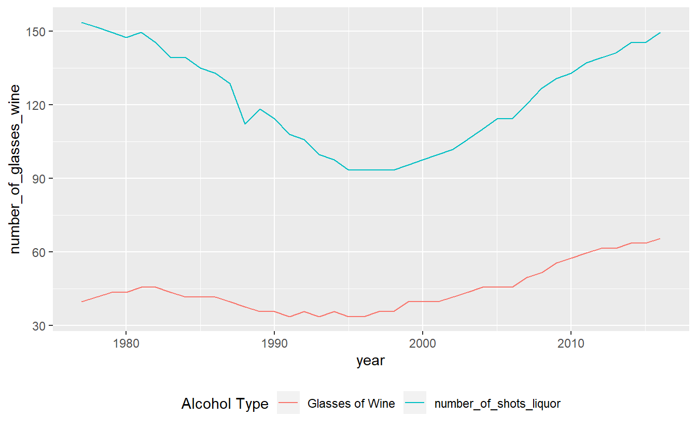

7 Graphing with ggplot2
ggplot2 is the package we will use to make graphs. The ‘gg’ stands for ‘grammar of graphics’ which is the idea that most graphs can be made using the same few ‘pieces’. We’ll get into those pieces during this lesson. Cheat sheet for ggplot
install.packages("ggplot2")library(ggplot2)When working with new data, It’s often useful to quickly graph the data to try to understand what you’re working with. It is also useful when understanding how much to trust the data.
The data we will work on is data about alcohol consumption in U.S. states from 1977-2016 from the National Institute of Health. It contains the per capita alcohol consumption for each state for every year. More details on the data are available here.
Their method to determine per capita consumption is amount of alcohol sold / number of people aged 14+ living in the state. We’ll return to this method at the end to discuss how much we trust the data.
Now we need to load the data.
load("data/apparent_per_capita_alcohol_consumption.rda")The name of the file is quite long so for convenience let’s copy it to a new object with a better name.
alcohol <- apparent_per_capita_alcohol_consumptionThe original data has every state, region, and the US as a whole. For this lesson we’re using data subsetted to just include states. For now let’s just look at Pennsylvania
penn_alcohol <- alcohol[alcohol$state == "pennsylvania", ]7.1 What does the data look like?
Before graphing, it’s helpful to see what the data includes. An important thing to check is what variables are available and the units of these variables.
names(penn_alcohol)
#> [1] "state"
#> [2] "year"
#> [3] "ethanol_beer_gallons_per_capita"
#> [4] "ethanol_wine_gallons_per_capita"
#> [5] "ethanol_spirit_gallons_per_capita"
#> [6] "ethanol_all_drinks_gallons_per_capita"
#> [7] "number_of_beers"
#> [8] "number_of_glasses_wine"
#> [9] "number_of_shots_liquor"
#> [10] "number_of_drinks_total"summary(penn_alcohol)
#> state year ethanol_beer_gallons_per_capita
#> Length:40 Length:40 Min. :1.210
#> Class :character Class :character 1st Qu.:1.310
#> Mode :character Mode :character Median :1.350
#> Mean :1.346
#> 3rd Qu.:1.380
#> Max. :1.450
#> ethanol_wine_gallons_per_capita ethanol_spirit_gallons_per_capita
#> Min. :0.1700 Min. :0.4500
#> 1st Qu.:0.1875 1st Qu.:0.5050
#> Median :0.2100 Median :0.5950
#> Mean :0.2250 Mean :0.5910
#> 3rd Qu.:0.2350 3rd Qu.:0.6725
#> Max. :0.3300 Max. :0.7400
#> ethanol_all_drinks_gallons_per_capita number_of_beers
#> Min. :1.850 Min. :286.8
#> 1st Qu.:2.035 1st Qu.:310.5
#> Median :2.200 Median :320.0
#> Mean :2.163 Mean :319.0
#> 3rd Qu.:2.315 3rd Qu.:327.1
#> Max. :2.390 Max. :343.7
#> number_of_glasses_wine number_of_shots_liquor number_of_drinks_total
#> Min. :33.74 Min. : 93.43 Min. :394.7
#> 1st Qu.:37.21 1st Qu.:104.85 1st Qu.:434.1
#> Median :41.67 Median :123.54 Median :469.3
#> Mean :44.65 Mean :122.71 Mean :461.4
#> 3rd Qu.:46.64 3rd Qu.:139.63 3rd Qu.:493.9
#> Max. :65.49 Max. :153.64 Max. :509.97.1.1 Exercises
- What variables does this data include?
- How does the units affect what kind of research we can do?
- What kind of things can we do with this data?
- What can’t we do?
- What variables would be nice to add to this data?
- e.g. number of people age 14+ per state-year
Looking at the correlation between numerical variables can help us understand their relationship.
cor(penn_alcohol$number_of_beers,
penn_alcohol$number_of_glasses_wine)
#> [1] 0.12204cor(penn_alcohol$number_of_beers,
penn_alcohol$number_of_shots_liquor)
#> [1] 0.6174096cor(penn_alcohol$number_of_glasses_wine,
penn_alcohol$number_of_shots_liquor)
#> [1] 0.61510157.1.2 Exercises
- What do these correlations tell us about the relationship between beer, wine, and liquor?
- Why do you think these relationships exist?
- Assuming you had no resource or time restrictions, how would you test your hypothesis?
It’s also important to look for any possible outliers by checking very large or small values in the data. However, we’ll leave that until the end as it relates to our understanding of how “trustworthy” the data is.
7.2 Graphing data
To make a simple plot using ggplot(), all you need to do is specify the data set and the variables you want to plot. From there you add on pieces of the graph using the + symbol and then specify what you want added.
In many cases, the graphs you’ll make are scatterplots of two variables and time-series plots. Time-series plots just show how a variable (e.g. crime) changes over time.
7.3 Time-Series Plots
In time-series plots the x-axis is always the time variable while the y-axis is the variable whose trend over time is what we’re interested in. When you see a graph showing crime rates over time, this is the type of graph you’re looking at.
For ggplot() we need to specify 4 things
- The data set - this is the very first thing you’ll write
- The x-axis variable
- The y-axis variable
- The type of graph - e.g. line, point, etc.
Some useful types of graphs are
- geom_point() A point graph, can be used for scatter plots
- geom_line() A line graph
- geom_smooth() Adds some regression lines
- geom_bar() A barplot
Let’s start with a time-series of beer consumption in Pennsylvania The code below starts by writing our data set name. Then says what our x- and y-axis variables are called. The x- and y-axis variables are within parentheses of the function called aes(). aes() stands for aesthetic and what’s included inside here describes how the graph will look. It’s not intuitive to remember, but you need to included this.
ggplot(penn_alcohol, aes(x = year,
y = number_of_beers))
When we run it we get our graph. It includes the variable names for each axis and shows the range of data through the tick marks. What is missing is the actual data. For that we need to specify what type of graph it is. We literally add it with the + followed by the type of graph we want.
YOU CANNOT START A NEW LINE WITH +
Note that on the x-axis it prints out every single year and makes it completely unreadable. That is because the “year” column is a character type, so R thinks each year is its own category. It prints every single year because it thinks we want every category shown. To fix this we can make the column numeric and ggplot() will be smarter about printing fewer years.
penn_alcohol$year <- as.numeric(penn_alcohol$year)Let’s start with point and line graphs.
ggplot(penn_alcohol, aes(x = year, y = number_of_beers)) +
geom_point()
ggplot(penn_alcohol, aes(x = year, y = number_of_beers)) +
geom_line()
We can also combine different types of graphs.
ggplot(penn_alcohol, aes(x = year, y = number_of_beers)) +
geom_point() +
geom_line()
It looks like there’s a huge change in beer consumption over time. But look at where they y-axis starts. It starts around 280 so really that change is only ~60 beers. That’s because when graphs don’t start at 0, it makes small changes appear big. We can fix this by forcing the y-axis to begin at 0. We add this to the graphs the same as adding anything else.
ggplot(penn_alcohol, aes(x = year, y = number_of_beers)) +
geom_point() +
geom_line() +
expand_limits(y = 0)
Now that graphs shows what looks like nearly no change even though that is also not true. Which graph is best? It’s hard to say.
Inside the types of graphs we can change how it is displayed
ggplot(penn_alcohol, aes(x = year, y = number_of_beers)) +
geom_line(color = "forestgreen", size = 1.3)
Some other useful features are changing the axis labels and the graph title.
- xlab() x-axis label
- ylab() y-axis label
- ggtitle() graph title
ggplot(penn_alcohol, aes(x = year, y = number_of_beers)) +
geom_line(color = "forestgreen", size = 1.3) +
xlab("Year") +
ylab("Number of Beers") +
ggtitle("PA Annual Beer Consumption Per Capita (1977-2016)")
7.3.1 Exercises
That’s a lot of new info so let’s stop for questions and some examples
- Make a graph using some other variable or state
- Add labels and a title to the graph
Making a scatter plot simply requires changing the x-axis from year to another numerical variable and using geom_point().
ggplot(penn_alcohol, aes(x = number_of_shots_liquor,
y = number_of_beers)) +
geom_point()
This graph shows us that when liquor consumption increases, beer consumption also usually increases.
7.3.2 Exercises
- What is the relationship between beer and wine consumption?
ggplot(penn_alcohol, aes(x = number_of_glasses_wine,
y = number_of_beers)) +
geom_point()
- Make a scatterplot using some other pair of variables or a different state.
While scatterplots can help show the relationship between variables, we lose the information of how consumption changes over time.
Many time-series plots show multiple variables over the same time period (e.g. murder and robbery over time). There are ways to change the data itself to make creating graphs like this easier, but let’s stick with the data we currently have and just change ggplot().
Start with a normal line graph, this time looking at wine.
ggplot(penn_alcohol, aes(x = year, y = number_of_glasses_wine)) +
geom_line()
Then include a second geom_line() with its own aes() for the second variable.
ggplot(penn_alcohol, aes(x = year, y = number_of_glasses_wine)) +
geom_line() +
geom_line(aes(x = year, y = number_of_shots_liquor))
A problem with this is that both lines are the same color. We need to set a color for each line, and do so within aes(). Instead of providing a color name, we need to provide the name the color will have in the legend. Do so for both lines.
ggplot(penn_alcohol, aes(x = year, y = number_of_glasses_wine,
color = "Glasses of Wine")) +
geom_line() +
geom_line(aes(x = year, y = number_of_shots_liquor,
color = "number_of_shots_liquor of Liquor"))
We can change the legend title.
ggplot(penn_alcohol, aes(x = year, y = number_of_glasses_wine,
color = "Glasses of Wine")) +
geom_line() +
geom_line(aes(x = year, y = number_of_shots_liquor,
color = "number_of_shots_liquor")) +
labs(color = "Alcohol Type")
Finally, a useful option to to move the legend from the side to the bottom. This will allow the graph to be larger.
ggplot(penn_alcohol, aes(x = year, y = number_of_glasses_wine,
color = "Glasses of Wine")) +
geom_line() +
geom_line(aes(x = year, y = number_of_shots_liquor,
color = "number_of_shots_liquor")) +
labs(color = "Alcohol Type") +
theme(legend.position = "bottom")
If our data was in a different format we could set colors if a different way. The way our data is setup is how most data you’ll encounter will be and, as our goal is understanding the data, this method works.
7.4 Should we trust this data?
Trusting data is generally based on how well the data was collected (e.g. how much data is missing, errors in the data) as well as if we believe the method of collecting data is itself good.
Let’s look at how this data was collected to see how much we should trust it.
The National Institute of Health determined per capita consumption by dividing alcohol sales by people aged 14+ living in the state. So there’s two pieces: alcohol sales as a measure of consumption, and people aged 14+ as a measure of those doing the consuming. Alcohol sales data comes from sales or tax data for alcohol sold in that state.
7.4.1 Exercises
- What assumptions are the NIH making when it comes to this data?
- Do you believe these assumptions are the right ones to make?
- How would you handle alcohol use by tourists or other out-of-staters?
If you have good content knowledge in the field, it’s useful to skim the data to see if it matches your expectations. This is a good gut check and fast test for any weird data.
Let’s take a look at the states with the highest and lowest alcohol consumption
View(alcohol)7.4.2 Exercises
- Are these results what you expected?
- Does it make the data more or less trustworthy?